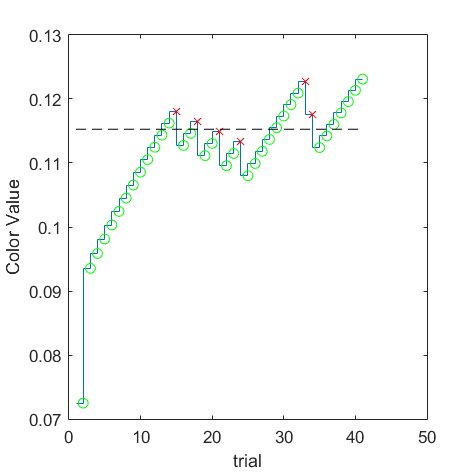
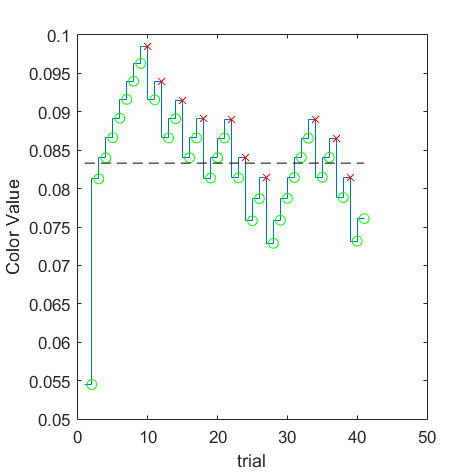

|

(VRR_Frequency=8/Size_Degree=4/Eccentricity=0) = 0.115278 |
(VRR_Frequency=8/Size_Degree=4/Eccentricity=5) = 0.102614 |

(VRR_Frequency=8/Size_Degree=4/Eccentricity=10) = 0.0833182 |
(VRR_Frequency=8/Size_Degree=4/Eccentricity=15) = 0.0688363 |
(VRR_Frequency=8/Size_Degree=4/Eccentricity=20) = 0.0682583 |
(VRR_Frequency=8/Size_Degree=4/Eccentricity=25) = 0.0633806 |
(VRR_Frequency=8/Size_Degree=4/Eccentricity=30) = 0.0641813 |